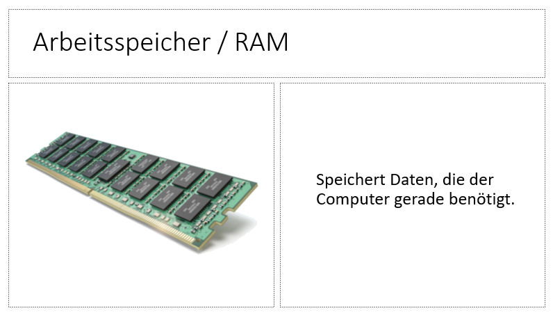

Übung Kahoot: Die Computertasten
Übung Kahoot: Informatiksysteme
Übung Kahoot: Windows Desktop
Übung Kahoot: EVA - Modell
Übung Kahoot: Wie heißt die Software
Übung Kahoot: Hardware
Übung Kahoot: PC-Schnittstellen
Übung Kahoot: Wofür ist die Software
beschreibe 5 Schnittstellen

1. Powerpoint-Datei zum Abschreiben der Merktexte
4. Übung Kahoot: EVA - Modell
A. Word
Übung 1:
Markieren und Löschen
Tastatur
Übung 2: Kopieren, Ausschneiden, Einfügen
1. Powerpoint erstellen
Käthe-Kollwitz Logo
B. Kahoots
1. Übung Kahoot:
Die Computertasten
2. Übung Kahoot: Informatiksysteme
3. Übung Kahoot: Windows Desktop